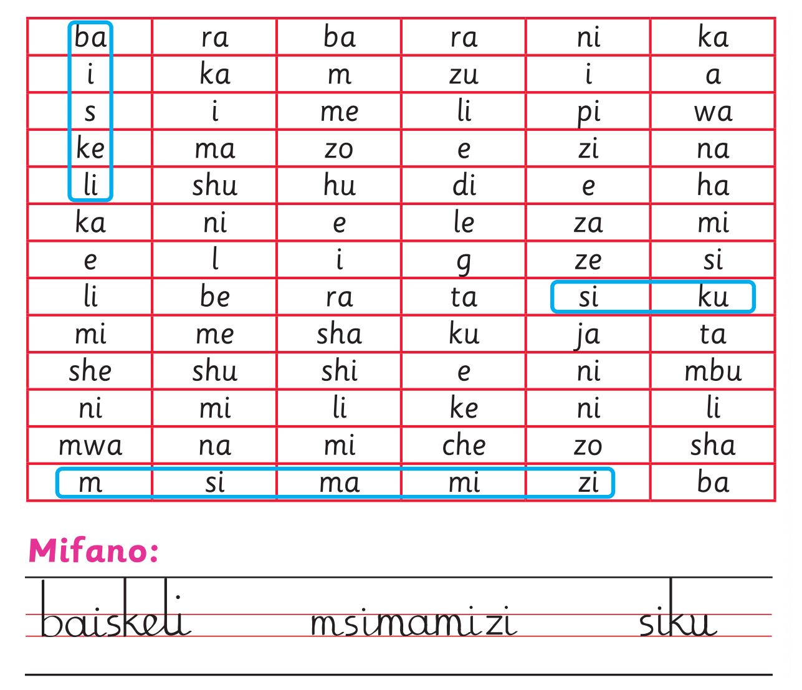

2. Tafuta maneno kumi ya Kiswahili kutoka katika chati hii, kisha yaandike kwa mwandiko wa kuunga au Mwandiko wa Brelli.
2. Tafuta maneno kumi ya Kiswahili kutoka katika chati
hii, kisha yaandike kwa mwandiko wa kuunga/Mwandiko wa Brelli.
2. Tafuta maneno kumi ya Kiswahili kutoka katika chati hii, kisha uyaandike kwa mwandiko wa kuunga au Mwandiko wa Brelli; chunguza chati ya mstari ulioinuliwa kabla ya kujibu; tumia eneo la kuandikia, kibodi au Breli.

Mifano: baiskeli. msimamizi. siku.Shughuli ya sita
Shughuli ya sita
Tazama/Chunguza picha zifuatazo, kisha andika jina la kila picha
kwa mwandiko wa kuunga/Mwandiko wa Brelli.
Tazama au Chunguza picha zifuatazo, kisha andika jina la kila picha kwa mwandiko wa kuunga au Mwandiko wa Brelli.
Tazama au Chunguza picha, kisha andika jina lake kwa mwandiko wa kuunga au Mwandiko wa Brelli; tumia eneo la kuandikia, kibodi au Breli.
1.1.Begi la shule la manjano na machungwa.
Tazama au Chunguza picha, kisha andika jina lake kwa mwandiko wa kuunga au Mwandiko wa Brelli; tumia eneo la kuandikia, kibodi au Breli.